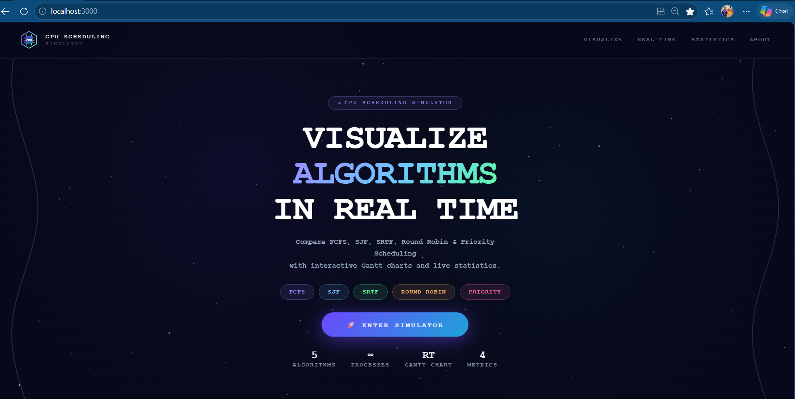

Cpu Scheduler Calculator
CPU Scheduler is a system that manages and schedules processes in the CPU. It selects which process should run next based on different scheduling algorithms such as FCFS, SJF, Round Robin, and Priority Scheduling. It helps improve CPU utilization, reduce waiting time, and ensure efficient process execution.